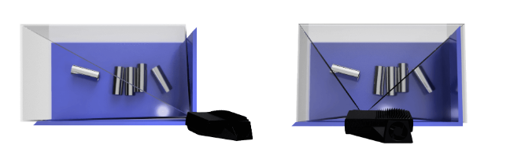

工作距离和摄像机的定位
简介
在本教程中，我们将学习如何为特定的应用正确定位摄像机。我们将涵盖不同的影响因素，如视场角（FOV）、工作距离和图像泛光。
寻找正确的工作距离
在许多应用中，相机将被固定安装，以恒定的FOV来捕获点云。在其他应用中，相机可能会被安装在机器人手臂上。安装在机器人上的相机在如何定位以捕获良好的点云方面提供了更多的自由。在这两种选择中，摄像机仍然需要被定位，以便为给定场景进行光学优化。
当找到正确的工作距离时，有几件事情需要考虑到。
1.相机需要看到的区域或体积是什么？
2.工作区域或体积内所需的空间分辨率和精度是多少？
3.给定的视场是否在DaoAI相机的工作范围内？
一旦我们知道了我们要成像的区域，我们就可以通过以下方式检查它是否满足相机的推荐工作距离和我们算法的要求。
使用我们的 计算器.
检查页面 工作距离和视场. 该页面将估计相机与场景的距离、FOV、空间分辨率和精度之间的关系。
使用数据表。
通过使用DaoAI Camera Studio等捕捉和检查点云进行手动验证。
备注
在数据表和FOV页面，我们可以找到关于DaoAI相机点的精度和空间分辨率作为工作距离的函数的信息。
警告
请注意，噪音与工作距离成正比，空间分辨率与工作距离成反比。
如果工作距离、FOV、分辨率和精度的所有要求都能用一个摄像机的位置来满足，我们可以继续进行下一步。如果不能，我们就需要考虑使用机器人安装、多个摄像机等。在这种情况下，我们建议你联系support@daoai.com，我们将帮助你找到一个解决方案。
摄像机的角度
DaoAI相机内部的成像传感器在方位角方向（Y轴）上有一个轻微的平移角度。如果想让相机与场景垂直，就应该考虑到这一点。


尽管将相机垂直于场景安装也许是最直观的，但这并不是最好的方法。如果可能的话，以轻微的倾斜角度安装相机，以避免来自背景的反射，比如泛光。这也释放了场景上方的空间，使工具和机器人更容易进入。查看可用的DaoAI 安装.
备注
如果场景包含镜面，相机的倾斜就更加重要。
在拣选应用中
对于拣选应用，将DaoAI BP相机投影仪置于箱体后边缘或后角上方（见以下图片）。平移和倾斜它，使二维相机看向箱体的中心。投影仪的光线不应落在离投影仪最近的两面箱壁上的内表面；它们应几乎与这两面箱壁平行。这样安装摄像机可以最大限度地减少箱壁内的相互反射。
寻找所需的焦点深度
DaoAI相机对失焦有很强的抵抗力，但是为了最大限度地提高点云的精度，应该考虑到焦点深度。